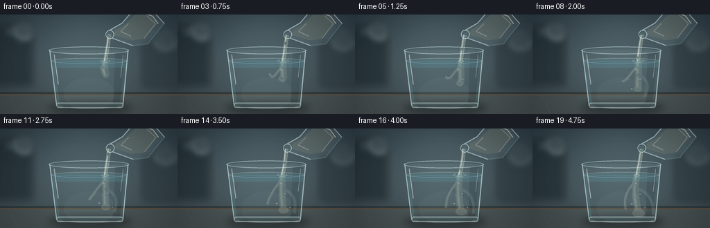
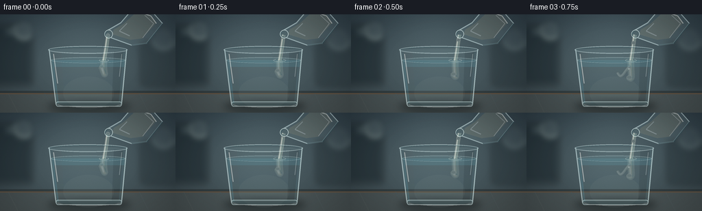

CODING AGENTS AS PIXEL WORLD MODELS
traex/GPT-5.6-Sol · material_0022
点击播放 · 原生 RGB 像素
逐轮保存的候选
回放视频、检查图与代码变化。
每份候选均可单独播放。实际图片检查记录在下方工具轨迹中。
候选 01播放与检查图
点击播放 · 原生 RGB 像素


展开代码变化
--- 上一保存版本
+++ 本次保存版本
@@ -0,0 +1,232 @@
+from pathlib import Path
+import math
+import numpy as np
+from PIL import Image, ImageDraw, ImageFilter
+import artifact_io
+
+# Procedural, antialiased text-to-video illustration.
+W, H, N, FPS = 256, 144, 20, 4.0
+S = 4
+WS, HS = W*S, H*S
+rng = np.random.default_rng(22091)
+
+
+def sc(v): return int(round(v*S))
+def pts(seq): return [(sc(x), sc(y)) for x, y in seq]
+def rgba_layer(): return Image.new("RGBA", (WS, HS), (0,0,0,0))
+
+def composite(base, layer):
+ return Image.alpha_composite(base, layer)
+
+def bezier(p0,p1,p2,p3,n=40):
+ out=[]
+ for u in np.linspace(0,1,n):
+ v=1-u
+ out.append((v**3*p0[0]+3*v*v*u*p1[0]+3*v*u*u*p2[0]+u**3*p3[0],
+ v**3*p0[1]+3*v*v*u*p1[1]+3*v*u*u*p2[1]+u**3*p3[1]))
+ return out
+
+# A softly lit, fixed kitchen/laboratory backdrop.
+yy, xx = np.mgrid[0:HS, 0:WS]
+y = yy / S; x = xx / S
+base = np.zeros((HS,WS,4), dtype=np.uint8)
+# cool gray wall, warming gently toward the table
+wall = np.clip((y/144.0)[...,None] * np.array([17,17,14]) + np.array([39,52,60]),0,255)
+# a pool of daylight behind the central action
+light = np.exp(-(((x-125)/105)**2 + ((y-53)/82)**2))[...,None]
+wall = wall + light*np.array([33,38,37])
+# very subtle texture; fixed across time
+noise = rng.normal(0, 1.2, (HS,WS,1))
+wall = np.clip(wall+noise,0,255)
+base[:,:,:3] = wall.astype(np.uint8); base[:,:,3]=255
+background = Image.fromarray(base, "RGBA")
+
+# Defocused background features.
+bg = rgba_layer(); d=ImageDraw.Draw(bg,"RGBA")
+d.rounded_rectangle((sc(-14),sc(15),sc(48),sc(104)), radius=sc(5), fill=(20,31,36,125), outline=(121,143,145,30), width=sc(1))
+d.rectangle((sc(10),sc(23),sc(40),sc(27)), fill=(137,156,153,20))
+d.rounded_rectangle((sc(205),sc(39),sc(273),sc(105)), radius=sc(7), fill=(28,39,43,80))
+# soft highlights/bokeh
+d.ellipse((sc(21),sc(8),sc(49),sc(36)), fill=(203,217,201,18))
+d.ellipse((sc(222),sc(18),sc(255),sc(51)), fill=(185,204,197,12))
+bg=bg.filter(ImageFilter.GaussianBlur(sc(4.2)))
+background=composite(background,bg)
+# Counter surface and back edge.
+ct=rgba_layer(); d=ImageDraw.Draw(ct,"RGBA")
+d.rectangle((0,sc(112),WS,HS), fill=(90,77,63,255))
+d.rectangle((0,sc(112),WS,sc(115)), fill=(33,39,40,130))
+# warm directional glow on stone/wood
+d.rectangle((0,sc(117),WS,HS), fill=(117,94,70,34))
+for x0,a in [(12,22),(65,10),(203,17)]:
+ d.line((sc(x0),sc(116),sc(x0+14),HS), fill=(205,166,117,a), width=sc(1))
+background=composite(background,ct)
+
+
+def render_frame(k):
+ t=k/(N-1)
+ im=background.copy()
+
+ # Contact shadow of tumbler.
+ sh=rgba_layer(); ds=ImageDraw.Draw(sh,"RGBA")
+ ds.ellipse((sc(70),sc(126),sc(190),sc(143)), fill=(8,14,16,120))
+ sh=sh.filter(ImageFilter.GaussianBlur(sc(5.5)))
+ im=composite(im,sh)
+
+ # Glass body: transparent back panel first.
+ back=rgba_layer(); d=ImageDraw.Draw(back,"RGBA")
+ body=[(71,51),(185,51),(177,133),(82,133)]
+ d.polygon(pts(body), fill=(172,220,228,16))
+ # vertical refracted background bands
+ d.polygon(pts([(77,55),(89,55),(94,128),(85,128)]), fill=(212,237,237,13))
+ d.polygon(pts([(166,54),(180,54),(173,129),(163,129)]), fill=(25,61,69,13))
+ im=composite(im,back)
+
+ # Water volume clipped to tapered lower glass.
+ water=rgba_layer(); dw=ImageDraw.Draw(water,"RGBA")
+ water_poly=[(75,67),(182,67),(176,130),(83,130)]
+ dw.polygon(pts(water_poly), fill=(96,178,199,40))
+ # deeper cool tint at bottom
+ for j in range(18):
+ y0=77+j*3
+ xl=76+(y0-51)*0.13; xr=184-(y0-51)*0.10
+ dw.rectangle((sc(xl),sc(y0),sc(xr),sc(y0+3.2)), fill=(44,124,151,2+j//3))
+ # diffuse caustic inside water
+ dw.ellipse((sc(92),sc(91),sc(166),sc(139)), fill=(188,224,220,9))
+ im=composite(im,water)
+
+ # Glycerin underwater: slow, dense, optically refractive tendrils.
+ # It enters immediately and lengthens steadily; broad curls appear near the end.
+ plume=rgba_layer(); dp=ImageDraw.Draw(plume,"RGBA")
+ phase=0.48*k
+ depth=72 + 54*(1-math.exp(-2.4*(t+0.03)))
+ # Main viscous core as a gently bending cubic ribbon
+ ex=151.5 + 1.0*math.sin(phase*.55)
+ endx=145 + 8*math.sin(1.4*t+0.4)
+ path=bezier((ex,67),(149+4*math.sin(phase*.4),82),(157-10*t,99),(endx,depth),55)
+ # Soft optical halo, layered to suggest clear liquid rather than paint
+ dp.line(pts(path), fill=(210,226,211,30), width=sc(11), joint="curve")
+ dp.line(pts(path), fill=(232,231,196,52), width=sc(6.2), joint="curve")
+ dp.line(pts([(px-1.4,py) for px,py in path]), fill=(245,252,245,78), width=sc(1.25), joint="curve")
+ dp.line(pts([(px+2.2,py) for px,py in path]), fill=(50,117,132,44), width=sc(.8), joint="curve")
+
+ # curled side-streams become visible as glycerin folds through water
+ curl_amount=max(0,(t-.14)/.86)
+ if curl_amount>0:
+ yend=min(depth-4, 84+38*curl_amount)
+ left=bezier((ex-1,75),(141,84),(139-10*curl_amount,98),(136-8*math.sin(t*3),yend),40)
+ dp.line(pts(left), fill=(238,242,220,34), width=sc(4.2), joint="curve")
+ dp.line(pts([(a-.8,b) for a,b in left]), fill=(249,253,247,63), width=sc(.7), joint="curve")
+ if t>.37:
+ q=(t-.37)/.63
+ right=bezier((151,87),(169,92),(167+8*q,108),(160+14*q,119+6*q),45)
+ dp.line(pts(right), fill=(224,235,213,31), width=sc(5), joint="curve")
+ dp.line(pts([(a+1,b) for a,b in right]), fill=(65,126,138,40), width=sc(.7), joint="curve")
+ # rounded folding bulb at leading tip
+ rad=3.5+5.5*t
+ dp.ellipse((sc(endx-rad),sc(depth-rad*.55),sc(endx+rad),sc(depth+rad*.75)),
+ fill=(229,233,207,34), outline=(242,250,239,62), width=sc(.8))
+ # Fine Schlieren ripples around the clear-liquid boundary.
+ for j in range(3):
+ a=t-j*.08
+ if a>0.24:
+ cy=94+13*j+8*math.sin(t*1.2+j)
+ cx=147+(j-1)*9+4*math.sin(t*2+j)
+ dp.arc((sc(cx-13-3*t),sc(cy-4),sc(cx+13+3*t),sc(cy+7)),
+ 186,350,fill=(222,243,238,40),width=sc(.65))
+ plume=plume.filter(ImageFilter.GaussianBlur(sc(.55)))
+ im=composite(im,plume)
+
+ # Surface and impact dimple sit over the underwater flow.
+ surf=rgba_layer(); ds=ImageDraw.Draw(surf,"RGBA")
+ ds.ellipse((sc(74),sc(62.8),sc(183),sc(71.2)), fill=(118,186,199,25), outline=(212,239,240,76), width=sc(1))
+ ds.arc((sc(77),sc(63.8),sc(180),sc(70.4)), 5,175, fill=(34,90,107,68), width=sc(.8))
+ wob=1.0+0.4*math.sin(k*.9)
+ ds.ellipse((sc(ex-7*wob),sc(65.2),sc(ex+7*wob),sc(69.6)), outline=(236,246,235,95), width=sc(.75))
+ ds.arc((sc(ex-5),sc(64.6),sc(ex+5),sc(69.2)), 180,355, fill=(38,95,107,65), width=sc(.75))
+ im=composite(im,surf)
+
+ # Stream above the glass: cohesive, slow and visibly viscous.
+ stream=rgba_layer(); ds=ImageDraw.Draw(stream,"RGBA")
+ tipx=157.4+0.75*math.sin(k*.31)
+ tipy=29.5+0.4*math.cos(k*.27)
+ midx=154.0+0.65*math.sin(k*.55)
+ stream_path=bezier((tipx,tipy),(156,41),(midx,54),(ex,67.5),45)
+ # halo, transparent body, bright edge, and inner lens line
+ ds.line(pts(stream_path), fill=(235,234,208,42), width=sc(6.2), joint="curve")
+ ds.line(pts(stream_path), fill=(218,230,207,106), width=sc(4.4), joint="curve")
+ ds.line(pts([(a-1.35,b) for a,b in stream_path]), fill=(255,255,246,190), width=sc(.8), joint="curve")
+ ds.line(pts([(a+1.2,b) for a,b in stream_path]), fill=(75,119,122,74), width=sc(.7), joint="curve")
+ # Traveling bulge reinforces the high viscosity.
+ u=(k*.11)%1
+ idx=min(len(stream_path)-1,int(u*(len(stream_path)-1)))
+ bx,by=stream_path[idx]
+ ds.ellipse((sc(bx-2.7),sc(by-2.0),sc(bx+2.7),sc(by+3.2)),fill=(222,230,209,48),outline=(250,252,241,80),width=sc(.5))
+ im=composite(im,stream)
+
+ # Tilted glass pitcher/beaker, cropped at the upper-right edge.
+ # tiny motion keeps the pour alive while retaining visual stability
+ ox=.75*math.sin(k*.22); oy=.3*math.cos(k*.19)
+ vessel=rgba_layer(); dv=ImageDraw.Draw(vessel,"RGBA")
+ poly=[(157+ox,23+oy),(176+ox,12+oy),(194+ox,-9+oy),(221+ox,-5+oy),
+ (237+ox,13+oy),(214+ox,42+oy),(192+ox,45+oy),(159+ox,33+oy)]
+ dv.polygon(pts(poly), fill=(185,221,222,24))
+ # glycerin remaining inside pitcher, subtly warm and transparent
+ liquid=[(166+ox,22+oy),(181+ox,13+oy),(199+ox,-4+oy),(219+ox,0+oy),
+ (227+ox,13+oy),(207+ox,35+oy),(190+ox,37+oy),(164+ox,29+oy)]
+ dv.polygon(pts(liquid), fill=(225,222,184,41))
+ dv.line(pts(poly+[poly[0]]), fill=(220,244,245,132), width=sc(1.5), joint="curve")
+ # far dark refraction edge and broad specular stripes
+ dv.line(pts([(237+ox,13+oy),(214+ox,42+oy),(192+ox,45+oy)]), fill=(42,83,91,83), width=sc(1))
+ dv.line(pts([(202+ox,-4+oy),(220+ox,2+oy),(228+ox,13+oy)]), fill=(255,255,249,126), width=sc(1.25))
+ dv.line(pts([(185+ox,13+oy),(174+ox,24+oy),(189+ox,31+oy)]), fill=(250,255,250,82), width=sc(1.5))
+ # pouring lip / rim
+ dv.ellipse((sc(152.2+ox),sc(22.2+oy),sc(164.5+ox),sc(34.8+oy)), fill=(151,196,198,27), outline=(235,253,250,160), width=sc(1))
+ dv.arc((sc(153+ox),sc(24+oy),sc(164+ox),sc(33.5+oy)),55,250,fill=(45,91,98,100),width=sc(.8))
+ # highlights visible through the transparent vessel
+ dv.line(pts([(211+ox,1+oy),(224+ox,13+oy),(208+ox,34+oy)]),fill=(255,255,248,91),width=sc(.8))
+ im=composite(im,vessel)
+
+ # Crisp foreground walls/rim of the receiving tumbler.
+ glass=rgba_layer(); dg=ImageDraw.Draw(glass,"RGBA")
+ # back and front rims
+ dg.ellipse((sc(70),sc(46.2),sc(186),sc(57.5)), fill=(183,220,225,12), outline=(224,245,246,118), width=sc(1.2))
+ dg.arc((sc(72),sc(47.6),sc(184),sc(56.5)), 180,360, fill=(40,76,84,104), width=sc(1))
+ # tapered sidewalls: double edges imply thick clear glass
+ dg.line(pts([(71.5,51.5),(81.5,132)]), fill=(218,242,243,150), width=sc(1.5))
+ dg.line(pts([(184.5,51.5),(177,132)]), fill=(218,243,243,155), width=sc(1.5))
+ dg.line(pts([(75,55),(84.5,129)]), fill=(52,98,109,60), width=sc(.65))
+ dg.line(pts([(181,55),(174,129)]), fill=(48,94,105,62), width=sc(.65))
+ # bright vertical reflections
+ dg.line(pts([(78,58),(84,101)]), fill=(255,255,251,123), width=sc(1.15))
+ dg.line(pts([(177.5,58),(174,91)]), fill=(248,255,252,97), width=sc(.85))
+ # thick base
+ dg.rounded_rectangle((sc(81.5),sc(127.5),sc(177.5),sc(135)),radius=sc(3),fill=(149,205,214,29),outline=(216,241,242,133),width=sc(1.3))
+ dg.line((sc(88),sc(132),sc(171),sc(132)), fill=(42,76,83,75), width=sc(.7))
+ dg.arc((sc(84),sc(128),sc(176),sc(136)),0,180,fill=(255,255,251,104),width=sc(.7))
+ im=composite(im,glass)
+
+ # Minute bright air bubbles caught in the thick glycerin, delayed over time.
+ bubbles=rgba_layer(); db=ImageDraw.Draw(bubbles,"RGBA")
+ for j,(bx0,by0,r) in enumerate([(149,80,1.05),(155,95,.75),(143,108,.9),(162,113,.65)]):
+ if t > .11+j*.13:
+ by=by0-1.1*math.sin(t*2+j)
+ db.ellipse((sc(bx0-r),sc(by-r),sc(bx0+r),sc(by+r)),fill=(220,239,235,26),outline=(248,255,250,116),width=sc(.45))
+ im=composite(im,bubbles)
+
+ # Gentle vignette focuses attention without crushing glass edge detail.
+ arr=np.asarray(im.convert("RGB"),dtype=np.float32)
+ Y,X=np.mgrid[0:HS,0:WS]
+ rr=((X-WS*.50)/(WS*.72))**2+((Y-HS*.49)/(HS*.88))**2
+ vig=np.clip(1-.20*np.maximum(rr-.16,0),.76,1)[...,None]
+ arr=np.clip(arr*vig,0,255).astype(np.uint8)
+ out=Image.fromarray(arr,"RGB").resize((W,H),Image.Resampling.LANCZOS)
+ return np.asarray(out,dtype=np.uint8)
+
+
+def main():
+ frames=np.stack([render_frame(k) for k in range(N)],axis=0)
+ artifact_io.save(frames, Path(__file__).resolve().parent)
+ print(f"saved {frames.shape} {frames.dtype}; motion MAD={np.abs(frames[1:].astype(int)-frames[:-1].astype(int)).mean():.3f}")
+
+if __name__ == "__main__":
+ main()
可观测工具轨迹
实际执行的命令与返回图片。
命令 1exit 0
/bin/bash -lc "cat prompt.txt && printf '\\n---RULES---\\n' && cat GENERATION_RULES.md && printf '\\n---SPEC---\\n' && cat task_spec.json"
命令 2exit 0
/bin/bash -lc "find . -maxdepth 2 -type f -printf '%p %s bytes\\n' | sort && printf '\\nTOOLS\\n' && command -v ffmpeg || true && command -v python3 || true && python3 - <<'PY'
try:
import cv2; print('cv2',cv2.__version__)
except Exception as e: print('no cv2',e)
try:
from PIL import Image; print('PIL ok')
except Exception as e: print('no PIL',e)
try:
import numpy; print('numpy',numpy.__version__)
except Exception as e: print('no numpy',e)
PY"命令 3exit 0
/bin/bash -lc 'cat artifact_io.py'
命令 4exit 0
/bin/bash -lc "cat > generate.py <<'PY'
from pathlib import Path
import math
import numpy as np
from PIL import Image, ImageDraw, ImageFilter
import artifact_io
# Procedural, antialiased text-to-video illustration.
W, H, N, FPS = 256, 144, 20, 4.0
S = 4
WS, HS = W*S, H*S
rng = np.random.default_rng(22091)
def sc(v): return int(round(v*S))
def pts(seq): return [(sc(x), sc(y)) for x, y in seq]
def rgba_layer(): return Image.new(\"RGBA\", (WS, HS), (0,0,0,0))
def composite(base, layer):
return Image.alpha_composite(base, layer)
def bezier(p0,p1,p2,p3,n=40):
out=[]
for u in np.linspace(0,1,n):
v=1-u
out.append((v**3*p0[0]+3*v*v*u*p1[0]+3*v*u*u*p2[0]+u**3*p3[0],
v**3*p0[1]+3*v*v*u*p1[1]+3*v*u*u*p2[1]+u**3*p3[1]))
return out
# A softly lit, fixed kitchen/laboratory backdrop.
yy, xx = np.mgrid[0:HS, 0:WS]
y = yy / S; x = xx / S
base = np.zeros((HS,WS,4), dtype=np.uint8)
# cool gray wall, warming gently toward the table
wall = np.clip((y/144.0)[...,None] * np.array([17,17,14]) + np.array([39,52,60]),0,255)
# a pool of daylight behind the central action
light = np.exp(-(((x-125)/105)**2 + ((y-53)/82)**2))[...,None]
wall = wall + light*np.array([33,38,37])
# very subtle texture; fixed across time
noise = rng.normal(0, 1.2, (HS,WS,1))
wall = np.clip(wall+noise,0,255)
base[:,:,:3] = wall.astype(np.uint8); base[:,:,3]=255
background = Image.fromarray(base, \"RGBA\")
# Defocused background features.
bg = rgba_layer(); d=ImageDraw.Draw(bg,\"RGBA\")
d.rounded_rectangle((sc(-14),sc(15),sc(48),sc(104)), radius=sc(5), fill=(20,31,36,125), outline=(121,143,145,30), width=sc(1))
d.rectangle((sc(10),sc(23),sc(40),sc(27)), fill=(137,156,153,20))
d.rounded_rectangle((sc(205),sc(39),sc(273),sc(105)), radius=sc(7), fill=(28,39,43,80))
# soft highlights/bokeh
d.ellipse((sc(21),sc(8),sc(49),sc(36)), fill=(203,217,201,18))
d.ellipse((sc(222),sc(18),sc(255),sc(51)), fill=(185,204,197,12))
bg=bg.filter(ImageFilter.GaussianBlur(sc(4.2)))
background=composite(background,bg)
# Counter surface and back edge.
ct=rgba_layer(); d=ImageDraw.Draw(ct,\"RGBA\")
d.rectangle((0,sc(112),WS,HS), fill=(90,77,63,255))
d.rectangle((0,sc(112),WS,sc(115)), fill=(33,39,40,130))
# warm directional glow on stone/wood
d.rectangle((0,sc(117),WS,HS), fill=(117,94,70,34))
for x0,a in [(12,22),(65,10),(203,17)]:
d.line((sc(x0),sc(116),sc(x0+14),HS), fill=(205,166,117,a), width=sc(1))
background=composite(background,ct)
def render_frame(k):
t=k/(N-1)
im=background.copy()
# Contact shadow of tumbler.
sh=rgba_layer(); ds=ImageDraw.Draw(sh,\"RGBA\")
ds.ellipse((sc(70),sc(126),sc(190),sc(143)), fill=(8,14,16,120))
sh=sh.filter(ImageFilter.GaussianBlur(sc(5.5)))
im=composite(im,sh)
# Glass body: transparent back panel first.
back=rgba_layer(); d=ImageDraw.Draw(back,\"RGBA\")
body=[(71,51),(185,51),(177,133),(82,133)]
d.polygon(pts(body), fill=(172,220,228,16))
# vertical refracted background bands
d.polygon(pts([(77,55),(89,55),(94,128),(85,128)]), fill=(212,237,237,13))
d.polygon(pts([(166,54),(180,54),(173,129),(163,129)]), fill=(25,61,69,13))
im=composite(im,back)
# Water volume clipped to tapered lower glass.
water=rgba_layer(); dw=ImageDraw.Draw(water,\"RGBA\")
water_poly=[(75,67),(182,67),(176,130),(83,130)]
dw.polygon(pts(water_poly), fill=(96,178,199,40))
# deeper cool tint at bottom
for j in range(18):
y0=77+j*3
xl=76+(y0-51)*0.13; xr=184-(y0-51)*0.10
dw.rectangle((sc(xl),sc(y0),sc(xr),sc(y0+3.2)), fill=(44,124,151,2+j//3))
# diffuse caustic inside water
dw.ellipse((sc(92),sc(91),sc(166),sc(139)), fill=(188,224,220,9))
im=composite(im,water)
# Glycerin underwater: slow, dense, optically refractive tendrils.
# It enters immediately and lengthens steadily; broad curls appear near the end.
plume=rgba_layer(); dp=ImageDraw.Draw(plume,\"RGBA\")
phase=0.48*k
depth=72 + 54*(1-math.exp(-2.4*(t+0.03)))
# Main viscous core as a gently bending cubic ribbon
ex=151.5 + 1.0*math.sin(phase*.55)
endx=145 + 8*math.sin(1.4*t+0.4)
path=bezier((ex,67),(149+4*math.sin(phase*.4),82),(157-10*t,99),(endx,depth),55)
# Soft optical halo, layered to suggest clear liquid rather than paint
dp.line(pts(path), fill=(210,226,211,30), width=sc(11), joint=\"curve\")
dp.line(pts(path), fill=(232,231,196,52), width=sc(6.2), joint=\"curve\")
dp.line(pts([(px-1.4,py) for px,py in path]), fill=(245,252,245,78), width=sc(1.25), joint=\"curve\")
dp.line(pts([(px+2.2,py) for px,py in path]), fill=(50,117,132,44), width=sc(.8), joint=\"curve\")
# curled side-streams become visible as glycerin folds through water
curl_amount=max(0,(t-.14)/.86)
if curl_amount>0:
yend=min(depth-4, 84+38*curl_amount)
left=bezier((ex-1,75),(141,84),(139-10*curl_amount,98),(136-8*math.sin(t*3),yend),40)
dp.line(pts(left), fill=(238,242,220,34), width=sc(4.2), joint=\"curve\")
dp.line(pts([(a-.8,b) for a,b in left]), fill=(249,253,247,63), width=sc(.7), joint=\"curve\")
if t>.37:
q=(t-.37)/.63
right=bezier((151,87),(169,92),(167+8*q,108),(160+14*q,119+6*q),45)
dp.line(pts(right), fill=(224,235,213,31), width=sc(5), joint=\"curve\")
dp.line(pts([(a+1,b) for a,b in right]), fill=(65,126,138,40), width=sc(.7), joint=\"curve\")
# rounded folding bulb at leading tip
rad=3.5+5.5*t
dp.ellipse((sc(endx-rad),sc(depth-rad*.55),sc(endx+rad),sc(depth+rad*.75)),
fill=(229,233,207,34), outline=(242,250,239,62), width=sc(.8))
# Fine Schlieren ripples around the clear-liquid boundary.
for j in range(3):
a=t-j*.08
if a>0.24:
cy=94+13*j+8*math.sin(t*1.2+j)
cx=147+(j-1)*9+4*math.sin(t*2+j)
dp.arc((sc(cx-13-3*t),sc(cy-4),sc(cx+13+3*t),sc(cy+7)),
186,350,fill=(222,243,238,40),width=sc(.65))
plume=plume.filter(ImageFilter.GaussianBlur(sc(.55)))
im=composite(im,plume)
# Surface and impact dimple sit over the underwater flow.
surf=rgba_layer(); ds=ImageDraw.Draw(surf,\"RGBA\")
ds.ellipse((sc(74),sc(62.8),sc(183),sc(71.2)), fill=(118,186,199,25), outline=(212,239,240,76), width=sc(1))
ds.arc((sc(77),sc(63.8),sc(180),sc(70.4)), 5,175, fill=(34,90,107,68), width=sc(.8))
wob=1.0+0.4*math.sin(k*.9)
ds.ellipse((sc(ex-7*wob),sc(65.2),sc(ex+7*wob),sc(69.6)), outline=(236,246,235,95), width=sc(.75))
ds.arc((sc(ex-5),sc(64.6),sc(ex+5),sc(69.2)), 180,355, fill=(38,95,107,65), width=sc(.75))
im=composite(im,surf)
# Stream above the glass: cohesive, slow and visibly viscous.
stream=rgba_layer(); ds=ImageDraw.Draw(stream,\"RGBA\")
tipx=157.4+0.75*math.sin(k*.31)
tipy=29.5+0.4*math.cos(k*.27)
midx=154.0+0.65*math.sin(k*.55)
stream_path=bezier((tipx,tipy),(156,41),(midx,54),(ex,67.5),45)
# halo, transparent body, bright edge, and inner lens line
ds.line(pts(stream_path), fill=(235,234,208,42), width=sc(6.2), joint=\"curve\")
ds.line(pts(stream_path), fill=(218,230,207,106), width=sc(4.4), joint=\"curve\")
ds.line(pts([(a-1.35,b) for a,b in stream_path]), fill=(255,255,246,190), width=sc(.8), joint=\"curve\")
ds.line(pts([(a+1.2,b) for a,b in stream_path]), fill=(75,119,122,74), width=sc(.7), joint=\"curve\")
# Traveling bulge reinforces the high viscosity.
u=(k*.11)%1
idx=min(len(stream_path)-1,int(u*(len(stream_path)-1)))
bx,by=stream_path[idx]
ds.ellipse((sc(bx-2.7),sc(by-2.0),sc(bx+2.7),sc(by+3.2)),fill=(222,230,209,48),outline=(250,252,241,80),width=sc(.5))
im=composite(im,stream)
# Tilted glass pitcher/beaker, cropped at the upper-right edge.
# tiny motion keeps the pour alive while retaining visual stability
ox=.75*math.sin(k*.22); oy=.3*math.cos(k*.19)
vessel=rgba_layer(); dv=ImageDraw.Draw(vessel,\"RGBA\")
poly=[(157+ox,23+oy),(176+ox,12+oy),(194+ox,-9+oy),(221+ox,-5+oy),
(237+ox,13+oy),(214+ox,42+oy),(192+ox,45+oy),(159+ox,33+oy)]
dv.polygon(pts(poly), fill=(185,221,222,24))
# glycerin remaining inside pitcher, subtly warm and transparent
liquid=[(166+ox,22+oy),(181+ox,13+oy),(199+ox,-4+oy),(219+ox,0+oy),
(227+ox,13+oy),(207+ox,35+oy),(190+ox,37+oy),(164+ox,29+oy)]
dv.polygon(pts(liquid), fill=(225,222,184,41))
dv.line(pts(poly+[poly[0]]), fill=(220,244,245,132), width=sc(1.5), joint=\"curve\")
# far dark refraction edge and broad specular stripes
dv.line(pts([(237+ox,13+oy),(214+ox,42+oy),(192+ox,45+oy)]), fill=(42,83,91,83), width=sc(1))
dv.line(pts([(202+ox,-4+oy),(220+ox,2+oy),(228+ox,13+oy)]), fill=(255,255,249,126), width=sc(1.25))
dv.line(pts([(185+ox,13+oy),(174+ox,24+oy),(189+ox,31+oy)]), fill=(250,255,250,82), width=sc(1.5))
# pouring lip / rim
dv.ellipse((sc(152.2+ox),sc(22.2+oy),sc(164.5+ox),sc(34.8+oy)), fill=(151,196,198,27), outline=(235,253,250,160), width=sc(1))
dv.arc((sc(153+ox),sc(24+oy),sc(164+ox),sc(33.5+oy)),55,250,fill=(45,91,98,100),width=sc(.8))
# highlights visible through the transparent vessel
dv.line(pts([(211+ox,1+oy),(224+ox,13+oy),(208+ox,34+oy)]),fill=(255,255,248,91),width=sc(.8))
im=composite(im,vessel)
# Crisp foreground walls/rim of the receiving tumbler.
glass=rgba_layer(); dg=ImageDraw.Draw(glass,\"RGBA\")
# back and front rims
dg.ellipse((sc(70),sc(46.2),sc(186),sc(57.5)), fill=(183,220,225,12), outline=(224,245,246,118), width=sc(1.2))
dg.arc((sc(72),sc(47.6),sc(184),sc(56.5)), 180,360, fill=(40,76,84,104), width=sc(1))
# tapered sidewalls: double edges imply thick clear glass
dg.line(pts([(71.5,51.5),(81.5,132)]), fill=(218,242,243,150), width=sc(1.5))
dg.line(pts([(184.5,51.5),(177,132)]), fill=(218,243,243,155), width=sc(1.5))
dg.line(pts([(75,55),(84.5,129)]), fill=(52,98,109,60), width=sc(.65))
dg.line(pts([(181,55),(174,129)]), fill=(48,94,105,62), width=sc(.65))
# bright vertical reflections
dg.line(pts([(78,58),(84,101)]), fill=(255,255,251,123), width=sc(1.15))
dg.line(pts([(177.5,58),(174,91)]), fill=(248,255,252,97), width=sc(.85))
# thick base
dg.rounded_rectangle((sc(81.5),sc(127.5),sc(177.5),sc(135)),radius=sc(3),fill=(149,205,214,29),outline=(216,241,242,133),width=sc(1.3))
dg.line((sc(88),sc(132),sc(171),sc(132)), fill=(42,76,83,75), width=sc(.7))
dg.arc((sc(84),sc(128),sc(176),sc(136)),0,180,fill=(255,255,251,104),width=sc(.7))
im=composite(im,glass)
# Minute bright air bubbles caught in the thick glycerin, delayed over time.
bubbles=rgba_layer(); db=ImageDraw.Draw(bubbles,\"RGBA\")
for j,(bx0,by0,r) in enumerate([(149,80,1.05),(155,95,.75),(143,108,.9),(162,113,.65)]):
if t > .11+j*.13:
by=by0-1.1*math.sin(t*2+j)
db.ellipse((sc(bx0-r),sc(by-r),sc(bx0+r),sc(by+r)),fill=(220,239,235,26),outline=(248,255,250,116),width=sc(.45))
im=composite(im,bubbles)
# Gentle vignette focuses attention without crushing glass edge detail.
arr=np.asarray(im.convert(\"RGB\"),dtype=np.float32)
Y,X=np.mgrid[0:HS,0:WS]
rr=((X-WS*.50)/(WS*.72))**2+((Y-HS*.49)/(HS*.88))**2
vig=np.clip(1-.20*np.maximum(rr-.16,0),.76,1)[...,None]
arr=np.clip(arr*vig,0,255).astype(np.uint8)
out=Image.fromarray(arr,\"RGB\").resize((W,H),Image.Resampling.LANCZOS)
return np.asarray(out,dtype=np.uint8)
def main():
frames=np.stack([render_frame(k) for k in range(N)],axis=0)
artifact_io.save(frames, Path(__file__).resolve().parent)
print(f\"saved {frames.shape} {frames.dtype}; motion MAD={np.abs(frames[1:].astype(int)-frames[:-1].astype(int)).mean():.3f}\")
if __name__ == \"__main__\":
main()
PY
python3 generate.py
python3 - <<'PY'
from pathlib import Path
import numpy as np
from PIL import Image
p=Path('.')
a=np.load('pixels.npz')['pixels']
print('pixels',a.shape,a.dtype,'frames',len(list((p/'frames').glob('*.png'))))
for f in ['pixels.npz','index.html','inspection.png','transition_check.png']:
print(f,Path(f).stat().st_size)
# verify exact RGB frame properties and temporal uniqueness
ims=[np.asarray(Image.open(f).convert('RGB')) for f in sorted((p/'frames').glob('*.png'))]
print('frame',ims[0].shape,ims[0].dtype,'unique_hashes',len({x.tobytes() for x in ims}))
print('range',np.min(ims),np.max(ims),'mean',np.mean(ims))
PY"命令 5exit 0
/bin/bash -lc 'command -v chafa || command -v viu || command -v jp2 || true'
命令 6exit 0
/bin/bash -lc "python3 - <<'PY'
from PIL import Image
import numpy as np
for k in [0,5,10,15,19]:
a=np.asarray(Image.open(f'frames/{k:02d}.png'))
# report temporal bbox relative first
b=np.asarray(Image.open('frames/00.png')).astype(int)
d=np.max(abs(a.astype(int)-b),2)
ys,xs=np.where(d>8)
print(k, 'changed>8',len(xs),'bbox', (xs.min(),ys.min(),xs.max(),ys.max()) if len(xs) else None,'max',d.max(),'mean',d.mean())
PY"保存候选 1 份；完成命令 6 次；可验证图片返回 0 张。原始 API 响应与完整日志保留在本地。